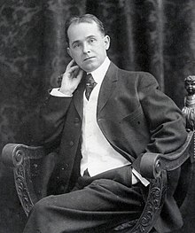

Cartoonist and artist Winsor McCay (1869-1964) is often considered the father of true animation, pioneering the drawn image in film and influencing iconic creators for generations to come, from Walt Disney to Moebius to Bill Watterson.

In his drawing, McCay made bold, prodigious use of linear perspective, particularly in detailed architecture and cityscapes. He textured his editorial cartoons with copious fine hatching, and made color a central element in Little Nemo. His comic strip work has influenced generations of cartoonists and illustrators. The technical level of McCay's animation—its naturalism, smoothness, and scale—was unmatched until the work of Fleischer Studios in the late 1920s, followed by Walt Disney's feature films in the 1930s. He pioneered inbetweening, the use of registration marks, cycling, and other animation techniques that were to become standard.
Winsor McCay: The Famous Cartoonist of the N.Y. Herald and His Moving Comics, more commonly known as Little Nemo, is a 1911 silent animated short film by American cartoonist Winsor McCay. One of the earliest animated films, it was McCay's first, and featured characters from McCay's comic strip Little Nemo in Slumberland. Its expressive character animation distinguished the film from the experiments of earlier animators.
Inspired by flip books his son brought home, McCay came to see the potential of the animated film medium. He claimed to be the first to make such films, though James Stuart Blackton and Émile Cohl were among those who preceded him. The short's four thousand drawings on rice paper were shot at Vitagraph Studios under Blackton's supervision. Most of the film's running time is made up of a live-action sequence in which McCay bets his colleagues that he can make drawings that move. He wins the bet with four minutes of animation in which the Little Nemo characters perform, interact, and metamorphose to McCay's whim.
Gertie the Dinosaur is a 1914 animated short film by American cartoonist and animator Winsor McCay. It is the earliest animated film to feature a dinosaur. McCay first used the film before live audiences as an interactive part of his vaudeville act; the frisky, childlike Gertie did tricks at the command of her master. McCay's employer William Randolph Hearst curtailed McCay's vaudeville activities, so McCay added a live-action introductory sequence to the film for its theatrical release renamed Winsor McCay, the Famous Cartoonist, and Gertie. McCay abandoned a sequel, Gertie on Tour (c. 1921), after producing about a minute of footage
Although Gertie is popularly thought to be the earliest animated film, McCay had earlier made Little Nemo (1911) and How a Mosquito Operates (1912). The American J. Stuart Blackton and the French Émile Cohl had experimented with animation even earlier; Gertie being a character with an appealing personality distinguished McCay's film from these earlier "trick films".